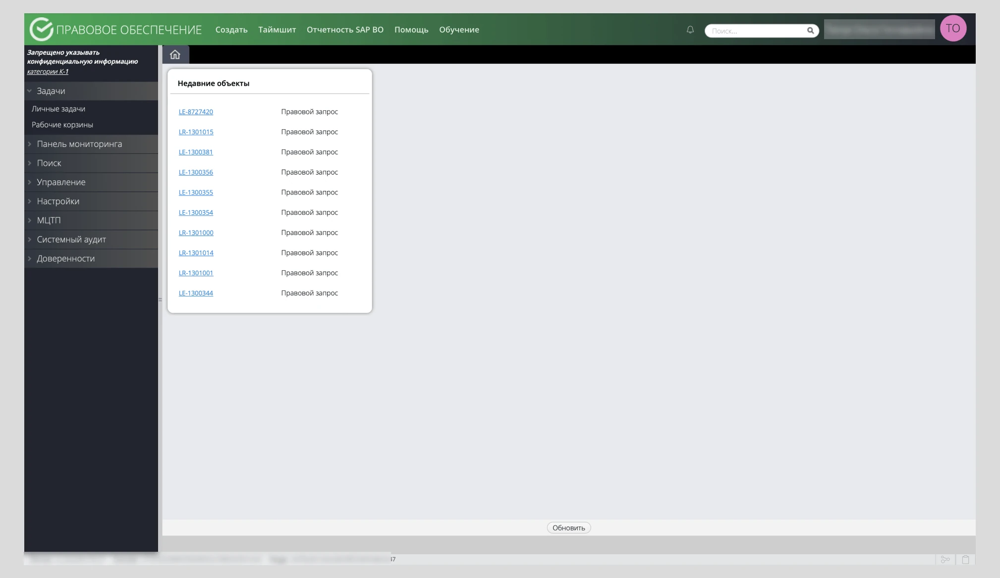
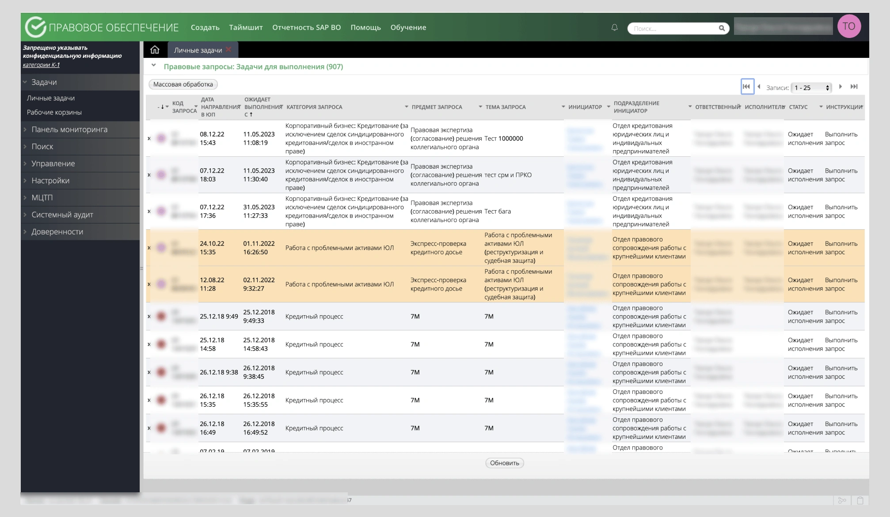
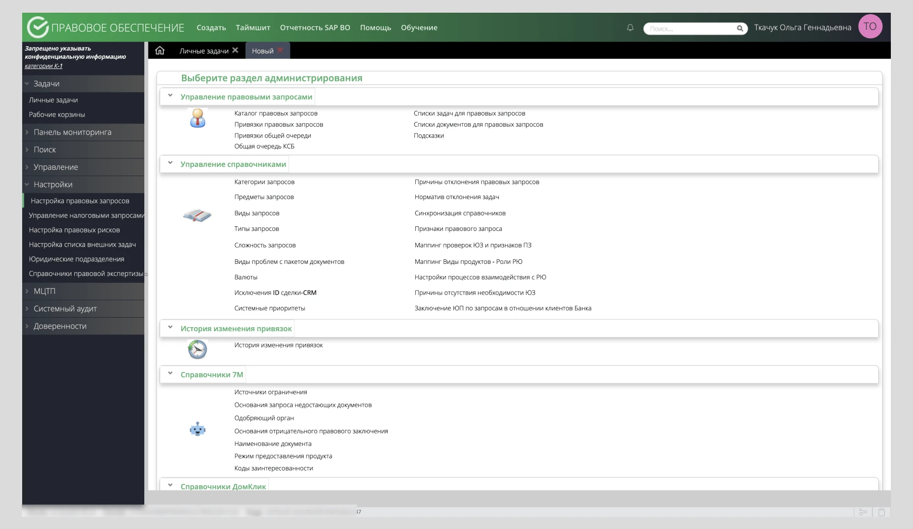
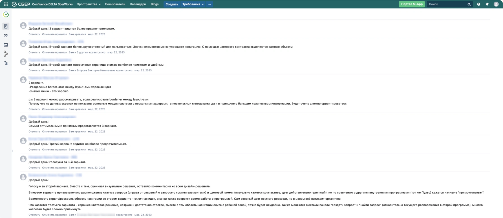
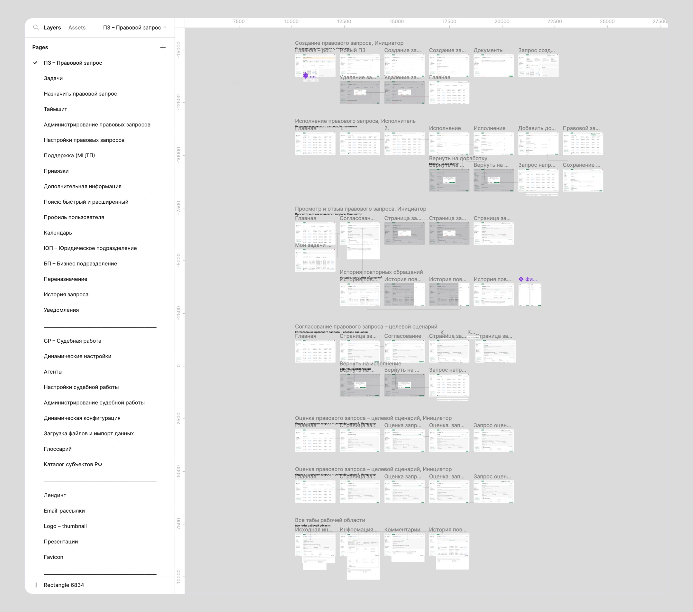
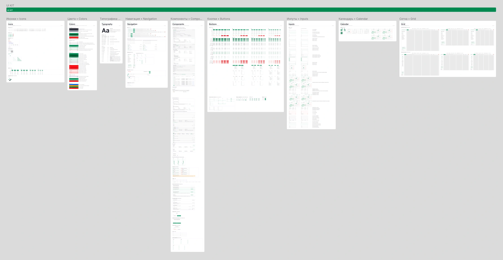
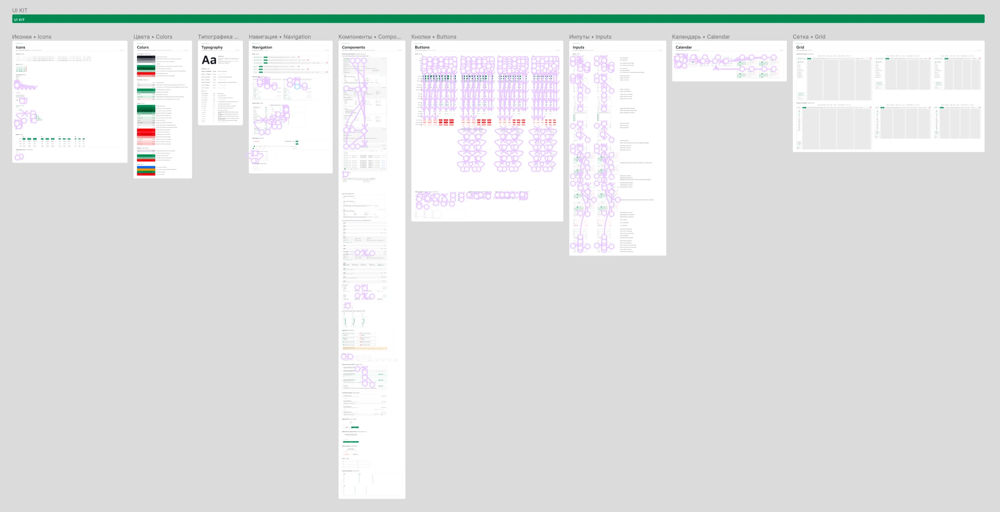
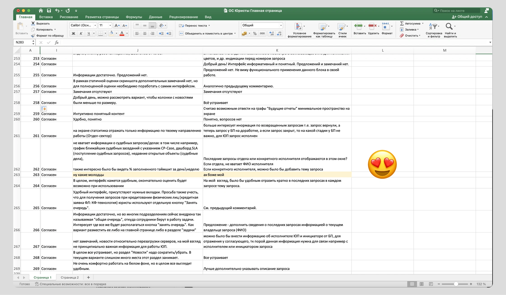

Редизайн юридического сервиса «LegalBPM» — системы менеджмента бизнес-процессов правовых запросов и судебной работы Сбера
2023 · Sber
Web
Product Design
UX/UI
Research & Testing
Prototyping
Animation
Контекст
Система позволяет любому сотруднику банка эффективно управлять процессом создания и оценки, а юристам исполнения и согласования правовых и судебных запросов, а также легко интегрироваться с другими направлениями деятельности банка: онлайн-кредитование (К7М), ипотека, корпоративное кредитование и другими.
В данном кейсе я расскажу с чего начинался проект, свою роль и как работал с пользователями.
Проект стратегически важный для банка, поэтому макеты под NDA.
Моя роль 🏁
Лидировал проектирование внутренней системы АС «BPM Правовое обеспечение» правовых запросов и судебной работы.
Потребность в обновлении появилась в связи с запуском нового стратегического проекта Банка — «Цифровой кредитный процесс в сегментах крупный и средний бизнес» и CIB (корпоративно-инвестиционный бизнес).
С чего всё начиналось 🚀
В феврале 2023 меня позвали возглавить проект, с которого уходил дизайнер.
На старте нужно было познакомиться с командой, посмотреть существующую систему и решения. Основной задачей проекта стала миграция с американского ПО Pega на собственную разработку Сбера.
Система функционировала более 11 лет, её разработали и поддерживали без дизайнера.
Основные задачи и проблемы
✦
Система функционирует более 11 лет, дизайн морально и физически устарел, но пользователи к нему привыкли. Нужно было найти баланс между редизайном UX и UI и улучшениями и сохранением паттернов поведения;
✦
В компании есть юристы, которые работают в ПО с момента создания, для них критична каждая секунда работы над запросами. Любая ошибка или плохо спроектированный сценарий — это репутационные и денежные потери для банка;
✦
С проекта ушёл дизайнер, всё нужно начинать с нуля;
✦
Сделать хороший продукт для консервативной ЦА и очень важного направления в банке;
✦
3500+ юристов – количество ежедневных пользователей, а смогут – любой из 300 000+ сотрудников;
✦
Стратегически важный проект на контроле у топ-менеджмента.
Было



3 концепции и исследования
После анализа существующих решений, лучших практик на рынке и подбора референсов, я сделал 3 концепции для проведения опроса пользователей системы, сбора обратной связи для аналитики и дальнейшей доработки финальной концепции.
✅ Результатом исследования и аналитики обратной связи стал итоговый дизайн-концепт, который я презентовал и защитил перед руководством.
Результаты опроса
Данные обезличены, все совпадения случайны.

Объем работы
Как итог сделал 500+ экранов и 70 сценариев. Для проекта создал Дизан-систему по методологии атомарного дизайна со стилями шрифтов цветов, компонентами и вариантами — всё на автолейаутах и с анимацией.
Макеты и организация проекта

Дизайн-система


Data-driven подход
Во время проектирования основных сценариев, постоянно общался с пользователями: проводил опросы, проблемные и JTBD-интервью, коридорные, юзабилити- и А/Б тесты.
Обратная связь коллег била в самое сердечко, горжусь своей работой ❤️

Результаты ✨
Проект помог выйти на новый уровень и понимании проектирования внутренних систем, исследованиях и презентации своей работы руководству, он был своеобразным вылетом из зоны комфорта.
Горжусь тем, что смог возглавил весь процесс проектирования сервиса: которым пользуются каждый день все юристы, а это 3 500+ человек, а смогут — любой из 300 000+ сотрудников Сбера